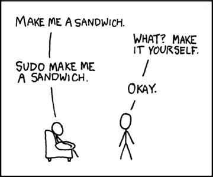

Linux Setup and Ubuntu Administration#
This appendix is meant to help you set up your Linux operating system and tools. The Unix chapter teaches everyday commands on Linux and macOS.
Installation and package-management steps here are optional for the lessons, but important to understand if you administer your own or a course machine. Make system-wide changes only when you are authorised to do so.
Choose an environment#
Ubuntu is a Linux distribution: an operating system built from Linux and a set of associated software. It is derived from Debian. They share tools such as APT, but their releases, repositories and packages are not interchangeable. Do not add an Ubuntu repository to Debian simply because both use .deb files.
Your starting point |
A suitable route |
|---|---|
Linux already installed |
Use its terminal. Follow your distribution’s documentation for software installation. |
macOS |
Use Terminal for the Unix lessons; see macOS Tools and Homebrew for optional additional tools. A Linux installation is not required. |
Windows |
On a supported Windows system, WSL provides a Linux environment without repartitioning. Use WSL 2 where supported and permitted by your institution. |
ChromeOS |
On supported devices, enable the Linux development environment. It normally provides Debian, not Ubuntu. Managed devices may restrict this feature. |
A managed or unsuitable personal machine |
Use an institution-provided Linux machine or approved remote environment. Ask your instructor for the supported access route. |
A need for an isolated Linux system |
A virtual machine runs a guest OS within your host OS. Choose a maintained virtualisation tool and an image compatible with your CPU architecture; check current licensing and institutional policy. |
Git Bash on Windows is useful for Git and some shell commands, but it is not an Ubuntu system and does not supply Ubuntu’s APT environment. PowerShell is a different shell with different syntax. macOS utilities also differ from GNU/Linux utilities in some options and output.
Open a terminal and identify the shell#
The terminal is the window; the shell interprets commands inside it. Ubuntu desktops commonly launch a terminal with Ctrl + Alt + T, or by searching for Terminal in the application menu. In Windows Terminal, choose your installed WSL distribution’s profile, not a PowerShell tab. On ChromeOS, open Terminal after enabling Linux. In VS Code, use Terminal > New Terminal and check the selected profile and whether you are working locally or remotely.
On macOS, use Spotlight (Cmd + Space) to find Terminal. Recent macOS installations normally start zsh, whereas these chapters use Bash. Enter bash to start a Bash session, then run:
echo "$BASH_VERSION"
pwd
Use exit to leave that Bash session. This does not change your configured login shell. echo "$SHELL" usually reports the login-shell setting, not necessarily the interpreter currently running. On Linux, cat /etc/os-release identifies the distribution; do not use an Ubuntu package command just because the terminal looks familiar.
Optional Ubuntu installation#
For learning commands, an existing system, WSL or a virtual machine is usually enough. Native installation and dual boot are separate projects, not prerequisites for the practicals.
Read the current Ubuntu Desktop installation guide and check supported hardware, image architecture, storage requirements and the release’s support period. Use an official Ubuntu download and its verification instructions.
Back up important data to a separate device or service and check that it can be restored. Save any disk-encryption recovery keys somewhere safe before changing boot or disk settings. On a managed device, obtain IT approval first.
For a virtual machine, create a new virtual disk rather than passing through a real disk. For a USB installer, remember that writing the image erases the selected USB drive. Check the target carefully.
Try the live environment where available to check networking and hardware. Follow the current installer rather than an old screenshot sequence. Erase disk destroys the selected disk’s contents; choose it only for a disk you explicitly intend to replace.
For dual boot, follow the guide’s current encryption and partitioning advice with assistance if needed. Do not improvise disk resizing during a class.
Swap need not be a separate partition: Linux can use a swap file, and some configurations use compressed memory such as zram. A separate /home partition can help organise reinstalls, but is not a backup and does not protect against drive failure or selecting the wrong partition. The guided defaults are normally a better starting point than a course-specific partition recipe.
Completion and command history#
These features solve different problems:
Feature |
What it does |
|---|---|
Ordinary |
Completes command names or paths; another press often lists ambiguous matches. No administrator setup is required. |
Programmable completion |
Adds application-specific suggestions, such as options or Git branch names. Optional shell/package configuration may be needed. |
Up/down arrows |
Usually recall previous/next commands in history. |
|
Searches backwards for text anywhere in a previous command; press again for another match. |
History-prefix search |
Finds previous commands beginning with the text typed before the cursor. This is an optional alternative arrow-key binding, not Tab completion. |
Try Tab and ordinary history recall first, in an interactive terminal rather than a notebook code cell. Read a recalled command before pressing Return. Do not put passwords or tokens in commands that may be recorded in shell history.
Optional history-prefix search in Bash#
The FoNS guide calls this “auto-complete”, but its example changes history search. Here we use your own Readline configuration, not sudo or an edit to /etc/inputrc.
Check
printf '%s\n' "${INPUTRC:-$HOME/.inputrc}"in Bash. IfINPUTRCis explicitly set, it overrides the usual path; understand that configuration before continuing with the default-path example below.If
~/.inputrcexists, make a backup under an unused name and open it in your text editor. Keep its current settings. If you create it for the first time on Ubuntu, put$include /etc/inputrcat the top to retain system defaults. On another platform, include that file only if it exists. This is Readline syntax, not a shell command.Add the following block once, outside any existing conditional block. It targets Bash’s Emacs editing mode, not vi mode or every Readline application:
$if Bash
$if mode=emacs
"\e[A": history-search-backward
"\e[B": history-search-forward
"\eOA": history-search-backward
"\eOB": history-search-forward
$endif
$endif
The two pairs cover common normal/application cursor-key sequences. Reload in your interactive Bash session:
bind -f ~/.inputrc
Run echo oak, then pwd, then type echo without Return and press Up. It should recall echo oak, skipping pwd. Press Down to move towards newer matches; an empty prefix searches all history. Tab still completes names. If your terminal sends different key sequences, or a shell customisation overrides them, check the terminal settings and help bind rather than editing system files.
To undo, remove just the added block or restore your backup, then open a fresh Bash session. Merely rereading a file after deleting bindings does not necessarily restore the old bindings in an already-running shell. If the file was newly created solely for this change, remove that file to return to the previous default setup. Keep other changes you made later.
zsh is configured separately#
zsh uses its own line editor, not Bash’s Readline configuration. In an interactive zsh session, the following optional bindings implement prefix search for the same common arrow-key sequences:
bindkey '\e[A' history-beginning-search-backward
bindkey '\e[B' history-beginning-search-forward
bindkey '\eOA' history-beginning-search-backward
bindkey '\eOB' history-beginning-search-forward
Test with echo oak, pwd, then echo and Up before making the change persistent. These commands affect the current keymap. Custom editing modes, plugins and terminal key sequences can change the result; consult the zsh line-editor manual. To retain the bindings, back up and edit your user ~/.zshrc once, placing them after any plugin setup that changes these keys. If you use a custom ZDOTDIR, its .zshrc is the relevant file instead. Open a new terminal to check. To undo, remove the added lines and open a fresh zsh session. Do not paste Readline configuration into .zshrc.
User-local shell customisation#
Try a change for the current session first. If it helps, put it in the appropriate user startup file, preserving the existing content and keeping a backup. Never replace an entire profile with a short course example.
For interactive Bash terminals on Ubuntu, ~/.bashrc is the usual home for aliases. Ubuntu’s supplied .bashrc often already sources ~/.bash_aliases; inspect it before adding another source line. For zsh, interactive setup belongs in ~/.zshrc (or under a custom ZDOTDIR). Bash login sessions instead read the first readable file among ~/.bash_profile, ~/.bash_login and ~/.profile; their relationship to .bashrc depends on the existing setup. See also Make brew available to your shell for Homebrew. Edit the file your shell actually reads, not every profile you can find.
A file-manager shortcut#
On an Ubuntu graphical desktop, xdg-open . normally opens the current directory in the preferred file manager; nautilus . is a GNOME Files-specific alternative. First check command -v xdg-open and try it in a harmless directory. Neither is a suitable expectation on a headless server. On macOS the equivalent is open ..
If you want a short alias, check type f for an existing command or alias, then try this Linux desktop example in your current Bash or zsh session:
alias f='xdg-open .'
Type f to use it; unalias f removes it from the current session. Only add it to your chosen startup file if you want it in future terminals. Open a fresh terminal to verify persistence. Remove the added line and reopen the shell to undo. Aliases are conveniences for interactive use, not a dependency to assume in scripts.
A personal script directory on PATH#
PATH is the list of folders a shell searches for commands. The shell chapter’s export PATH="$PATH:$HOME/.local/bin" affects only that session and its children. Putting a directory on PATH does not make every file inside it executable.
Create the directory with mkdir -p "$HOME/.local/bin". Inspect your existing startup file first: Ubuntu’s ~/.profile may already add it at login when it exists. If no existing setup does so, add the following to the appropriate user startup file once:
case ":$PATH:" in
*":$HOME/.local/bin:"*) ;;
*) export PATH="$PATH:$HOME/.local/bin" ;;
esac
This avoids duplicate entries when the file is reread and appends the directory so existing commands take precedence. Log out and back in for login-profile changes, or open a new terminal for interactive startup changes. Then check command -v boilerplate.sh after placing your executable practice script there. Use type -a boilerplate.sh to inspect competing definitions. Keep . and empty entries out of PATH; do not add your data or download directory. To undo, remove only the added block and start a fresh session of the relevant kind.
Administrator privileges#
Your normal account owns its files under your home directory. System package management generally changes shared directories and requires administrator authorisation. sudo runs a permitted command as another user, normally root; it does not grant every account unlimited access. Read a command and its target before authorising it. A missing command or a permissions error is not, by itself, a reason to add sudo.
On managed systems, ask the administrator for required software. Some tools can instead be installed in a user environment, but that is different from installing a system .deb package. Never use recursive permission changes to make system directories writable for coursework.


Install from configured Ubuntu repositories#
APT is Ubuntu’s package manager. It obtains software from configured repositories—sources that supply packages for your system—and works out which additional packages a requested package needs. A package name need not match its executable name. For example, the package r-base provides R. Inspect availability first:
apt show r-base
apt policy r-base
If you administer this Ubuntu machine and need R, the installation example is:
sudo apt update
sudo apt install r-base
apt update refreshes the local package index; it does not upgrade installed packages. apt install shows the proposed installation and dependencies for approval. Review the list and any removals before agreeing. Afterwards, R --version checks the executable. If r-base is unavailable, check your Ubuntu release and enabled components (it is normally in Universe), rather than adding a random PPA.
sudo apt upgrade is the separate operation for upgrading installed packages within the configured release. It is not a release upgrade, and an update check does not mean it has already happened. Schedule upgrades sensibly and follow your institution’s policy. These are interactive apt examples; for automation consult apt-get’s documented interface.
Repositories, components and trust#
Ubuntu archive components include Main, Restricted, Universe and Multiverse, with differing maintenance, support and licensing arrangements. The Software & Updates application, where available, can manage enabled sources; names and menus vary by release. Recent Ubuntu releases commonly use /etc/apt/sources.list.d/ubuntu.sources in deb822 format. Older configurations use /etc/apt/sources.list; additional sources can also live under /etc/apt/sources.list.d/. Do not overwrite these files with a list from another machine or release.
A Personal Package Archive (PPA) is a third-party source, usually hosted on Launchpad, not an automatic endorsement by Ubuntu. Adding any repository expands who supplies executable code and future updates to your system. Before doing so, identify the maintainer, check your release and architecture are supported, and read current signing-key and removal instructions. Modern instructions should scope trust to that source, for example with Signed-By, rather than importing an arbitrary globally trusted key.
APT verifies signed repository metadata and the package hashes it authenticates. This establishes provenance and integrity relative to a trusted key, not that the software is safe or appropriate. Do not bypass signature checks to make an installation succeed.
No third-party repository is required for these lessons. As an optional investigation, read a provider’s repository instructions and identify its trust, compatibility and update implications without adding it. Actual repository experiments belong on a disposable system with an understood recovery route. Removing a repository does not automatically uninstall or downgrade the packages it supplied.
Install a downloaded .deb only when needed#
Prefer the distribution repository or the software provider’s current official instructions. For a downloaded package, verify its source and choose the correct architecture (dpkg --print-architecture reports the system’s package architecture). A checksum from the same untrusted download location is not independent proof of authenticity.
After downloading a trusted package, open a terminal in its directory. Replace package-name.deb with the actual filename; these are example commands, not a download or a required exercise:
dpkg --info ./package-name.deb
sudo apt install ./package-name.deb
The ./ tells APT this is a local file. APT can obtain available dependencies from configured repositories. By contrast, sudo dpkg -i ./package-name.deb does not fetch missing dependencies and can leave a package unconfigured. If installation fails, read the error rather than retrying with force options.
A .deb can run privileged installation scripts. Some providers offer to add their update repository during installation; others do not. For VS Code on Linux, follow the vendor’s current instructions and review any repository prompt. Installing a local file neither guarantees future updates nor authorises every repository automatically.
Remove packages deliberately#
sudo apt remove PACKAGE removes a named installed package but normally leaves its system configuration. sudo apt purge PACKAGE also removes package-managed configuration, not necessarily user-created files in home directories. Replace PACKAGE with a package you deliberately intend to remove; read the proposed dependency changes before confirming. autoremove deals with dependencies no longer needed and also deserves review.
Do not remove your desktop’s video player or other preinstalled software merely to practise. For a hands-on exercise, use a disposable VM: install one small optional package, inspect its files with dpkg -L PACKAGE, and remove that same package after checking the proposed changes. Stop if the plan removes essential or unrelated software. A VM snapshot can help undo the experiment; it is not a backup of your working data.
Sources and verification#
Adapted from the FoNS Linux environment guide (environment choices, installation and shell conveniences) and terminal guide, alongside MQB’s relocated Ubuntu administration material. See Setup Guide Attribution for the source revision and full licence. MQB revision: 30 September 2026.
Ubuntu Desktop installation: current installation and hardware guidance.
Ubuntu package management: APT, dpkg and repository configuration.
Ubuntu repositories and APT authentication: background reading; check dates and current release documentation before using historical commands.
Bash reference manual and local
man bash: startup files, Readline and history.zsh line editor: zsh keybindings and history widgets.
The user-local Bash examples were checked on Linux in a temporary home directory. Installation, partitioning, repositories and package changes were reviewed against documentation, not performed on the reviewer’s machine. zsh, macOS, Windows/WSL and ChromeOS setup were not runtime-tested. Return to the Unix lesson or Shell Scripting after any setup you need.